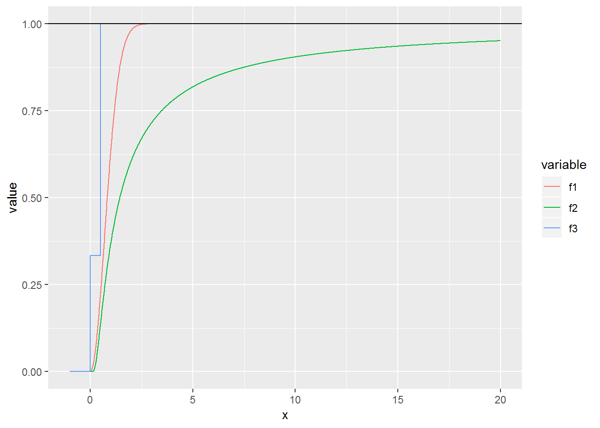
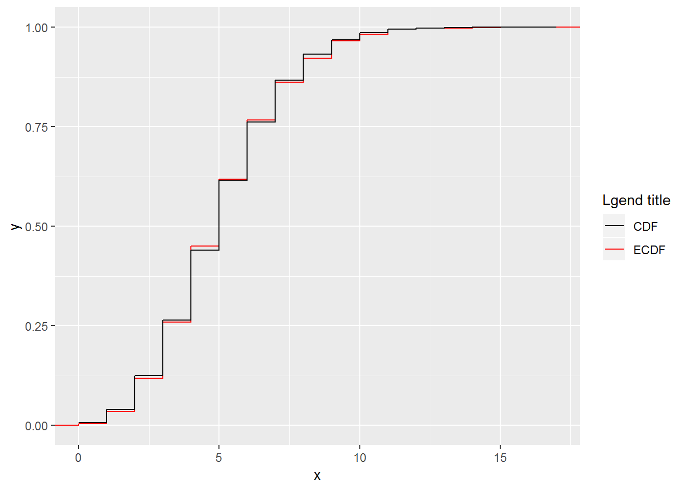
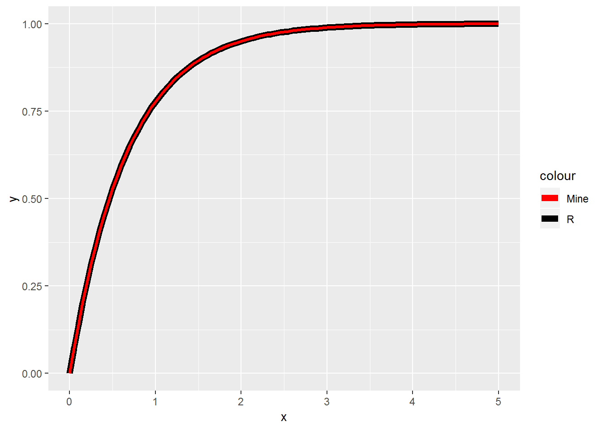
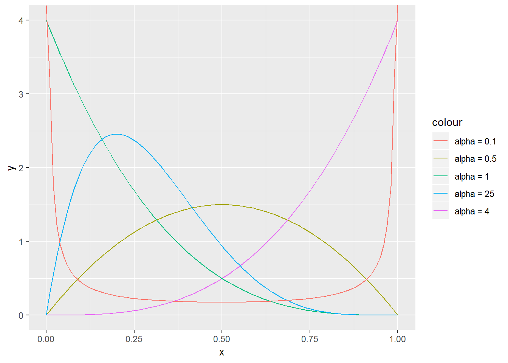
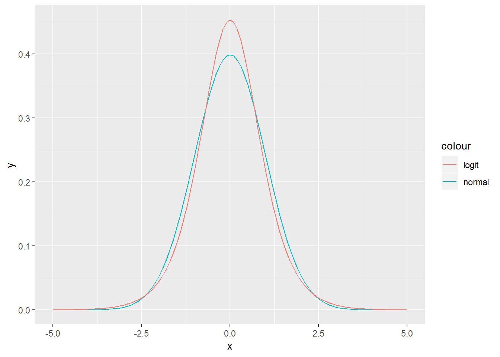

Chapter 4 Random variables
This chapter deals with random variables.
The students are expected to acquire the following knowledge:
Theoretical
R
- sampling from distributions
- calculating PDF, CDF, and quantile functions
- plotting results
- facet wrap
4.1 Identifying random variables
Exercise 1.1 Which of the functions below are valid CDFs? Find their respective densities. R: Plot the three functions.
\[\begin{equation} F(x) = \begin{cases} 1 - e^{-x^2} & x \geq 0 \\ 0 & x < 0. \end{cases} \end{equation}\]
\[\begin{equation} F(x) = \begin{cases} e^{-\frac{1}{x}} & x > 0 \\ 0 & x \leq 0. \end{cases} \end{equation}\]
\[\begin{equation} F(x) = \begin{cases} 0 & x \leq 0 \\ \frac{1}{3} & 0 < x \leq \frac{1}{2} \\ 1 & x > \frac{1}{2}. \end{cases} \end{equation}\]
Solution.
- Yes.
- First, let us check the limits. \(\lim_{x \rightarrow -\infty} (0) = 0\). \(\lim_{x \rightarrow \infty} (1 - e^{-x^2}) = 1 - \lim_{x \rightarrow \infty} e^{-x^2} = 1 - 0 = 1\).
- Second, let us check whether the function is increasing. Let \(x > y \geq 0\). Then \(1 - e^{-x^2} \geq 1 - e^{-y^2}\).
- We only have to check right continuity for the point zero. \(F(0) = 0\) and
\(\lim_{\epsilon \downarrow 0}F (0 + \epsilon) = \lim_{\epsilon \downarrow 0} 1 - e^{-\epsilon^2} = 1 - \lim_{\epsilon \downarrow 0} e^{-\epsilon^2} = 1 - 1 = 0\).
- We get the density by differentiating the CDF. \(p(x) = \frac{d}{dx} 1 - e^{-x^2} = 2xe^{-x^2}.\) Students are encouraged to check that this is a proper PDF.
- Yes.
- First, let us check the limits. $_{x -} (0) = 0 and \(\lim_{x \rightarrow \infty} (e^{-\frac{1}{x}}) = 1\).
- Second, let us check whether the function is increasing. Let \(x > y \geq 0\). Then \(e^{-\frac{1}{x}} \geq e^{-\frac{1}{y}}\).
- We only have to check right continuity for the point zero. \(F(0) = 0\) and \(\lim_{\epsilon \downarrow 0}F (0 + \epsilon) = \lim_{\epsilon \downarrow 0} e^{-\frac{1}{\epsilon}} = 0\).
- We get the density by differentiating the CDF. \(p(x) = \frac{d}{dx} e^{-\frac{1}{x}} = \frac{1}{x^2}e^{-\frac{1}{x}}.\) Students are encouraged to check that this is a proper PDF.
- No. The function is not right continuous as \(F(\frac{1}{2}) = \frac{1}{3}\), but \(\lim_{\epsilon \downarrow 0} F(\frac{1}{2} + \epsilon) = 1\).
f1 <- function (x) {
tmp <- 1 - exp(-x^2)
tmp[x < 0] <- 0
return(tmp)
}
f2 <- function (x) {
tmp <- exp(-(1 / x))
tmp[x <= 0] <- 0
return(tmp)
}
f3 <- function (x) {
tmp <- x
tmp[x == x] <- 1
tmp[x <= 0.5] <- 1/3
tmp[x <= 0] <- 0
return(tmp)
}
cdf_data <- tibble(x = seq(-1, 20, by = 0.001),
f1 = f1(x),
f2 = f2(x),
f3 = f3(x)) %>%
melt(id.vars = "x")
# geo_plot <- ggplot(data = data.frame(x = seq(-1, 10, by = 0.01)), aes(x = x)) +
# stat_function(aes(color = "f1"), fun = f1) +
# stat_function(aes(color = "f2"), fun = f2) +
# stat_function(aes(color = "f3"), fun = f3) +
# geom_hline(yintercept = 1)
# plot(geo_plot)
cdf_plot <- ggplot(data = cdf_data, aes(x = x, y = value, color = variable)) +
geom_hline(yintercept = 1) +
geom_line()
plot(cdf_plot)
Exercise 4.1 Let \(X\) be a random variable with CDF \[\begin{equation} F(x) = \begin{cases} 0 & x < 0 \\ \frac{x^2}{2} & 0 \leq x < 1 \\ \frac{1}{2} + \frac{p}{2} & 1 \leq x < 2 \\ \frac{1}{2} + \frac{p}{2} + \frac{1 - p}{2} & x \geq 2 \end{cases} \end{equation}\]
R: Plot this CDF for \(p = 0.3\). Is it a discrete, continuous, or mixed random varible?
- Find the probability density/mass of \(X\).
f1 <- function (x, p) {
tmp <- x
tmp[x >= 2] <- 0.5 + (p * 0.5) + ((1-p) * 0.5)
tmp[x < 2] <- 0.5 + (p * 0.5)
tmp[x < 1] <- (x[x < 1])^2 / 2
tmp[x < 0] <- 0
return(tmp)
}
cdf_data <- tibble(x = seq(-1, 5, by = 0.001), y = f1(x, 0.3))
cdf_plot <- ggplot(data = cdf_data, aes(x = x, y = y)) +
geom_hline(yintercept = 1) +
geom_line(color = "blue")
plot(cdf_plot)Solution.
\(X\) is a mixed random variable.
- Since \(X\) is a mixed random variable, we have to find the PDF of the continuous part and the PMF of the discrete part. We get the continuous part by differentiating the corresponding CDF, \(\frac{d}{dx}\frac{x^2}{2} = x\). So the PDF, when \(0 \leq x < 1\), is \(p(x) = x\). Let us look at the discrete part now. It has two steps, so this is a discrete distribution with two outcomes – numbers two and three. The first happens with probability \(\frac{p}{2}\), and the second with probability \(\frac{1 - p}{2}\). This reminds us of the bernoulli distribution, the only difference is that the probabilities of outcomes are halved, as they need to be suitably normalized. So the PMF for the discrete part is \(P(X = x) = (\frac{p}{2})^{2 - \lfloor x \rfloor} (\frac{1 - p}{2})^{\lfloor x \rfloor - 1}\).
4.2 Discrete random variables
Exercise 4.2 (Binomial random variable) Let \(X_k\), \(k = 1,...,n\), be random variables with the Bernoulli measure as the PMF with \(p = 0.4\). Let \(X = \sum_{k=1}^n\).
We call \(X_k\) a Bernoulli random variable. Find the CDF of \(X_k\).
Find PDF of \(X\).
Find CDF of \(X\).
- R: Simulate from the binomial distribution with \(n = 10\) and \(p = 0.5\), and from \(n\) Bernoulli distributions with \(p = 0.5\). Visually compare the sum of Bernoullis and the binomial. Hint: there is no standard function like rpois for a Bernoulli random variable. Check exercise 1.11 to find out how to sample from a Bernoulli distribution.
Solution.
There are two outcomes – zero and one. Zero happens with probability \(1 - p\). Therefore \[\begin{equation} F(k) = \begin{cases} 0 & k < 0 \\ 1 - p & 0 \leq k < 1 \\ 1 & k \geq 1. \end{cases} \end{equation}\]
For the probability of \(X\) to be equal to some \(k \leq n\), exactly \(k\) Bernoulli variables need to be one, and the others zero. So \(p^k(1-p)^{n-k}\). There are \(\binom{n}{k}\) such possible arrangements. Therefore \[\begin{align} P(X = k) = P(\sum X_k = 2) = \binom{n}{k} p^k (1 - p)^{n-k}. \end{align}\]
- \[\begin{equation}
F(k) = \sum_{i = 1}^{\lfloor k \rfloor} \binom{n}{i} p^i (1 - p)^{n - i}
\end{equation}\]
set.seed(1)
nsamps <- 10000
binom_samp <- rbinom(nsamps, size = 10, prob = 0.5)
bernoulli_mat <- matrix(data = NA, nrow = nsamps, ncol = 10)
for (i in 1:nsamps) {
bernoulli_mat[i, ] <- rbinom(10, size = 1, prob = 0.5)
}
bern_samp <- apply(bernoulli_mat, 1, sum)
b_data <- tibble(x = c(binom_samp, bern_samp),
type = c(rep("binomial", 10000), rep("Bernoulli_sum", 10000)))
b_plot <- ggplot(data = b_data, aes(x = x, fill = type)) +
geom_bar(position = "dodge")
plot(b_plot)
Exercise 4.3 (Geometric random variable) A variable with PMF \(p(1-p)^k\) is a geometric random variable with support in non-negative integers. It has one positive parameter \(p\).
Derive the CDF of a geometric random variable.
- R: Draw 1000 samples from the geometric distribution with \(p\) = 0.3$ and compare their frequencies to theoretical values.
Solution.
- \[\begin{align} P(X \leq k) &= \sum_{i = 0}^k p(1-p)^i \\ &= p \sum_{i = 0}^k (1-p)^i \\ &= p \frac{1 - (1-p)^{k+1}}{1 - (1 - p)} \\ &= 1 - (1-p)^{k + 1} \end{align}\]
set.seed(1)
geo_samp <- rgeom(n = 1000, prob = 0.3)
geo_samp <- data.frame(x = geo_samp) %>%
count(x) %>%
mutate(n = n / 1000, type = "empirical_frequencies") %>%
bind_rows(data.frame(x = 0:20, n = dgeom(0:20, prob = 0.3), type = "theoretical_measure"))
geo_plot <- ggplot(data = geo_samp, aes(x = x, y = n, fill = type)) +
geom_bar(stat="identity", position = "dodge")
plot(geo_plot)
Exercise 1.6 (Poisson random variable) A variable with PMF \(\frac{\lambda^k e^{-\lambda}}{k!}\) is a Poisson random variable with support in non-negative integers. It has one positive parameter \(\lambda\), which also represents its mean value and variance (a measure of the deviation of the values from the mean – more on mean and variance in the next chapter). This distribution is usually the default choice for modeling counts. We have already encountered a Poisson random variable in exercise 1.12, where we also sampled from this distribution.
The CDF of a Poisson random variable is \(P(X <= x) = e^{-\lambda} \sum_{i=0}^x \frac{\lambda^{i}}{i!}\).
- R: Draw 1000 samples from the Poisson distribution with \(p\) = 0.3$ and compare their empirical cumulative distribution function with the theoretical CDF.
set.seed(1)
pois_samp <- rpois(n = 1000, lambda = 5)
pois_samp <- data.frame(x = pois_samp)
pois_plot <- ggplot(data = pois_samp, aes(x = x, colour = "ECDF")) +
stat_ecdf(geom = "step") +
geom_step(data = tibble(x = 0:17, y = ppois(x, 5)), aes(x = x, y = y, colour = "CDF")) +
# stat_function(data = data.frame(x = 0:17), aes(x = x, colour = "CDF"), geom = "line", fun = ppois, args = list(lambda = 5)) +
scale_colour_manual("Lgend title", values = c("black", "red"))
plot(pois_plot)
4.3 Continuous random variables
Exercise 4.4 (Exponential random variable) A variable \(X\) with PDF \(\lambda e^{-\lambda x}\) is an exponential random variable with support in non-negative real numbers. It has one positive parameter \(\lambda\). \[\begin{equation} X | \lambda \sim \text{Exp}(\lambda) \end{equation}\]
Derive the CDF of an exponential random variable.
Derive the quantile function of an exponential random variable.
Calculate the probability \(P(1 \leq X \leq 3)\), where \(X \sim \text{Exp(1.5)}\).
R: Check your answer to c) with a simulation (rexp). Plot the probability in a meaningful way.
- R: Implement PDF, CDF, and the quantile function and compare their values with corresponding R functions visually. Hint: use BOLD line.
Solution.
\[\begin{align} F(x) &= \int_{0}^{x} \lambda e^{-\lambda t} dt \\ &= \lambda \int_{0}^{x} e^{-\lambda t} dt \\ &= \lambda (\frac{1}{-\lambda}e^{-\lambda t} |_{0}^{x}) \\ &= \lambda(\frac{1}{\lambda} - \frac{1}{\lambda} e^{-\lambda x}) \\ &= 1 - e^{-\lambda x}. \end{align}\]
\[\begin{align} F(F^{-1}(x)) &= x \\ 1 - e^{-\lambda F^{-1}(x)} &= x \\ e^{-\lambda F^{-1}(x)} &= 1 - x \\ -\lambda F^{-1}(x) &= \ln(1 - x) \\ F^{-1}(x) &= - \frac{ln(1 - x)}{\lambda}. \end{align}\]
- \[\begin{align} P(1 \leq X \leq 3) &= P(X \leq 3) - P(X \leq 1) \\ &= P(X \leq 3) - P(X \leq 1) \\ &= 1 - e^{-1.5 \times 3} - 1 + e^{-1.5 \times 1} \\ &\approx 0.212. \end{align}\]
set.seed(1)
nsamps <- 1000
samps <- rexp(nsamps, rate = 1.5)
sum(samps >= 1 & samps <= 3) / nsamps## [1] 0.212exp_plot <- ggplot(data.frame(x = seq(0, 5, by = 0.01)), aes(x = x)) +
stat_function(fun = dexp, args = list(rate = 1.5)) +
stat_function(fun = dexp, args = list(rate = 1.5), xlim = c(1,3), geom = "area", fill = "red")
plot(exp_plot)
exp_pdf <- function(x, lambda) {
return (lambda * exp(-lambda * x))
}
exp_cdf <- function(x, lambda) {
return (1 - exp(-lambda * x))
}
exp_quant <- function(q, lambda) {
return (-(log(1 - q) / lambda))
}
ggplot(data = data.frame(x = seq(0, 5, by = 0.01)), aes(x = x)) +
stat_function(fun = dexp, args = list(rate = 1.5), aes(color = "R"), size = 2.5) +
stat_function(fun = exp_pdf, args = list(lambda = 1.5), aes(color = "Mine"), size = 1.2) +
scale_color_manual(values = c("red", "black"))ggplot(data = data.frame(x = seq(0, 5, by = 0.01)), aes(x = x)) +
stat_function(fun = pexp, args = list(rate = 1.5), aes(color = "R"), size = 2.5) +
stat_function(fun = exp_cdf, args = list(lambda = 1.5), aes(color = "Mine"), size = 1.2) +
scale_color_manual(values = c("red", "black"))
ggplot(data = data.frame(x = seq(0, 1, by = 0.01)), aes(x = x)) +
stat_function(fun = qexp, args = list(rate = 1.5), aes(color = "R"), size = 2.5) +
stat_function(fun = exp_quant, args = list(lambda = 1.5), aes(color = "Mine"), size = 1.2) +
scale_color_manual(values = c("red", "black"))
Exercise 4.5 (Gamma random variable) Let \(X_i \sim \text{Exp}(\lambda), i = 1,...,n\).
- Find the PDF of \(\sum_{i=1}^n X_i\).
Solution.
set.seed(1)Exercise 4.6 (Beta random variable) A variable \(X\) with PDF \(p(x) = \frac{x^{\alpha - 1} (1 - x)^{\beta - 1}}{\text{B}(\alpha, \beta)}\), where \(\text{B}(\alpha, \beta) = \frac{\Gamma(\alpha) \Gamma(\beta)}{\Gamma(\alpha + \beta)}\) and \(\Gamma(x) = \int_0^{\infty} x^{z - 1} e^{-x} dx\) is a Beta random variable with support on \([0,1]\). It has two positive parameters \(\alpha\) and \(\beta\). \[\begin{equation} X | \alpha, \beta \sim \text{Beta}(\alpha, \beta) \end{equation}\] It is usually used in modeling rates. TODO: CDF
Calculate the PDF for \(\alpha = 1\) and \(\beta = 1\). What do you notice?
R: Plot densities of the beta distribution for \(\alpha = 0.5\), \(\beta = 0.5\), \(\alpha = 4\), \(\beta = 1\), \(\alpha = 1\), \(\beta = 4\), \(alpha = 0.1\), \(\beta = 0.1\).
- R: Sample from \(X \sim \text{Beta}(2, 5)\) and compare the histogram with Beta PDF.
Solution.
- \[\begin{equation} p(x) = \frac{x^{1 - 1} (1 - x)^{1 - 1}}{\text{B}(1, 1)} = 1. \end{equation}\]
set.seed(1)
ggplot(data = data.frame(x = seq(0, 1, by = 0.01)), aes(x = x)) +
stat_function(fun = dbeta, args = list(shape1 = 2, shape2 = 2), aes(color = "alpha = 0.5")) +
stat_function(fun = dbeta, args = list(shape1 = 4, shape2 = 1), aes(color = "alpha = 4")) +
stat_function(fun = dbeta, args = list(shape1 = 1, shape2 = 4), aes(color = "alpha = 1")) +
stat_function(fun = dbeta, args = list(shape1 = 2, shape2 = 5), aes(color = "alpha = 25")) +
stat_function(fun = dbeta, args = list(shape1 = 0.1, shape2 = 0.1), aes(color = "alpha = 0.1"))
set.seed(1)
nsamps <- 1000
samps <- rbeta(nsamps, 2, 5)
ggplot(data = data.frame(x = samps), aes(x = x)) +
geom_histogram(aes(y = ..density..), color = "black") +
stat_function(data = data.frame(x = seq(0, 1, by = 0.01)), aes(x = x),
fun = dbeta,
args = list(shape1 = 2, shape2 = 5),
color = "red",
size = 1.2)
Solution.
set.seed(1)Exercise 4.8 (Normal random variable) A random variable with PDF $p(x) = $ is a normal random variable. Many statistical methods assume a normal distribution. Due to it’s flexibility it is also one of the most researched distributions. For that reason statisticians often use transformations of variables or approximate distributions with the normal distribution.
- For Poisson distributed variables with a large \(\lambda\), the normal distribution provides a good approximation. Let \(X \sim \text{Poisson}(50)\). Approximate \(X\) with the normal distribution and compare it’s density with the Poisson histogram. What are the values of \(\mu\) and \(\sigma^2\) that should provide the best approximation?
Solution.
set.seed(1)
nsamps <- 100000
pois_samps <- rpois(nsamps, lambda = 50)
norm_samps <- rnorm(nsamps, mean = 50, sd = sqrt(50))
my_plot <- ggplot() +
geom_bar(data = tibble(x = pois_samps), aes(x = x, y = (..count..)/sum(..count..))) +
geom_density(data = tibble(x = norm_samps), aes(x = x), color = "red")
plot(my_plot)
Exercise 4.9 (Logistic random variable) A logistic random variable has CDF $F(x) = , where \(\mu\) is real and \(s > 0\). The distribution of the logistic random variable resembles a normal random variable, however it has heavier tails.
Find the PDF of a logistic random variable.
R: Implement logistic PDF and CDF and visually compare both for \(X \sim \text{N}(0, 1)\) and \(Y \sim \text{logit}(0, \sqrt{\frac{3}{\pi^2}})\).
Find \(P(...)\) TAIL PROBABILITIES.
Solution.
set.seed(1)
logit_pdf <- function (x, mu, s) {
return ((exp(-(x - mu)/(s))) / (s * (1 + exp(-(x - mu)/(s)))^2))
}
nl_plot <- ggplot(data = data.frame(x = seq(-5, 5, by = 0.01)), aes(x = x)) +
stat_function(fun = dnorm, args = list(mean = 0, sd = 1), aes(color = "normal")) +
stat_function(fun = logit_pdf, args = list(mu = 0, s = sqrt(3/pi^2)), aes(color = "logit"))
plot(nl_plot)